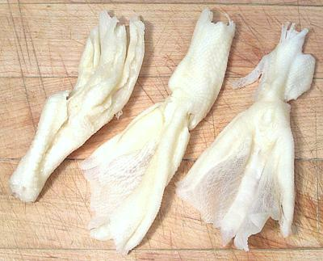

Duck Feet
Duck feet are plentiful in markets serving a Chinese or Southeast Asian
community, and fairly inexpensive. They are cooked whole, particularly for
dim sum, but are also very useful for adding body to soup stock.
Duck feet are about 6 inches long and weigh 1 ounce each.
Boneless
duck feet are also available (see below) and are used mainly in salads.
More on Working with Ducks.
Buying:
Find them in markets serving a Chinese community.
In Southern California they're generally cleaned, stripped of their outer
coating of yellow scales and packaged in foam plastic trays weighing about
1-1/2 pounds at about 2009 US $1.49/pound.
Prep
As sold in Southern California these are as in the
photo, cleaned, the outer scales peeled and ready to go. Just rinse. This
will probably be the same in markets throughout North America.
If you are plucking your own ducks, you need to scald the feet and peel
off the outer scaly skin. A recommendation from an equipment manufacturer
is two separate scalds of one minute each. You must not scald too much or
the inner skin will come off with the outer.
Cooking:
Cooking time needs to be nearly 2 hours, and may
be a combination of simmering and steaming depending on recipe. The liquid
they are cooked in will gel when cooled.
Boneless Duck Feet

Boneless duck feet are easy to find in the Asian markets in Los Angeles
but are relatively expensive (around 2009 US $5.99/pound) due to the
amount of hand work necessary to debone them. See US Patent 5437884 for
a description of of how it can be done.
Boneless duck feet are used in pretty much the same way as boneless
chicken feet, mainly in salads. The main difference is the hard nodules
left at the joints are harder than with chicken, and not so chewable, but
they're very small so just swallow them.
bd_dkfeetz 090704 - www.clovegarden.com
©Andrew Grygus - agryg@clovegarden.com - Photos on this
page not otherwise credited are © cg1 -
Linking to and non-commercial use of this page permitted